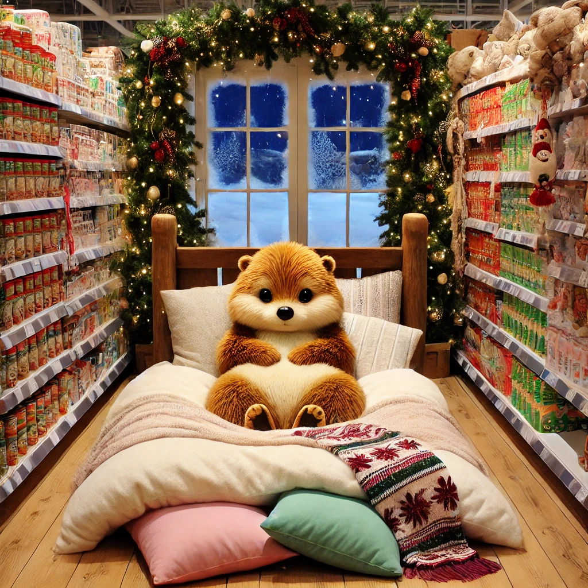

Es war einmal ein Wiesel namens Winnie, das oben auf dem Knabbereienregal eines Supermarkts in Leknes auf den Lofoten wohnte. Eines Tages war Winnie so müde, dass sie morgens einfach nicht aus dem Bett wollte. Sie lag da in ihren weichen Kissen und döste vor sich hin. Sie versank in einem Traum.
Winnie träumte, dass sie fliegen konnte. Sie flog über die spitzen Gipfel der Lofoten hinweg. Sie konnte kilometerweit sehen. Sie umkreiste gerade eine Bergspitze, als sie in der Ferne einen Punkt näherkommen sah: es war ein Schlitten mit Rentieren vorangespannt. Er wurde größer und sie hörte Glöckchen.Das war tatsächlich der Schlitten des Weihnachtsmanns, der da auf sie zuflog. Sie flog näher und landete auf dem großen Stapel von Geschenken, die im hintern Teil des Schlittens augetürmt waren. Aufgeregt wühlte sie sich in den stapeln hinein, war dann aber doch neugierig und krabbelte in Richtung Weihnachtsmann. Allerdings war da gar kein Weihnachtsmann, der den Schlitten lenkte sondern ein schwarzer wuscheliger Hund mit einem weißen Fleck an der Brust.
"Nanu, du bist ja gar nicht der Weihnachtsmann", sagte Traumwinnie verblüfft. "Nein, ich bin Beckett, der Weihnachtshund. Ich bin für ganz Norwegen zuständig. Wuff." "Kannst du Hilfe gebrauchen!", bot Winnie spontan an.
Beckett nickte begeistert. Und so rasten sie beiden im Schlitten Kreuz und quer über sie Lofoten, bis die Geschenke verteilt und Winnie hungrig war. Sie wollte gerade fragen, ob Beckett Lust auf Chips hatte, als sich der Schlitten auflöste und Winnie von einem lauten Gurgeln geweckt wurde. Ihr Magen hatte sie aus dem Schlaf gerissen. Winnie freute sich. Morgen war Weihnachten. Und jetzt musste sie aufstehen und sich was zu essen besorgen.
